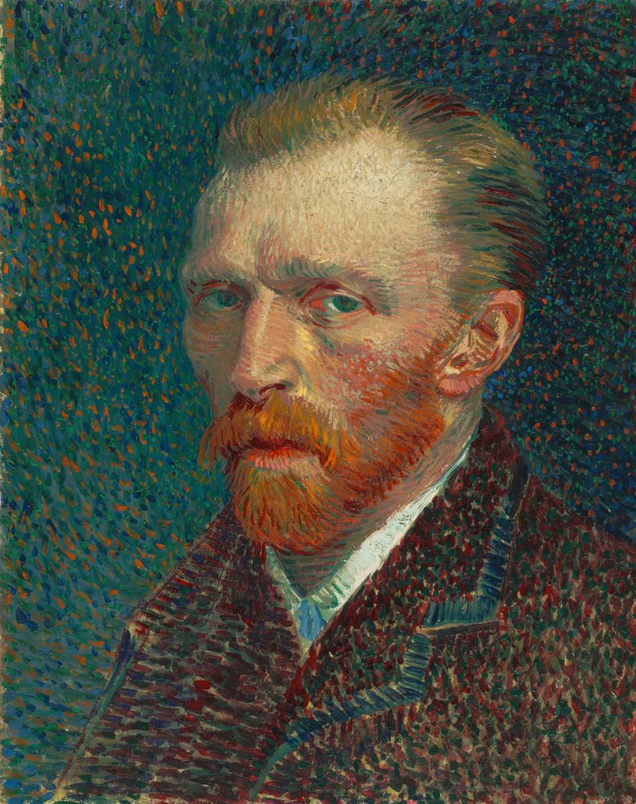

Vincent Van Gogh
est un peintre néerlandais majeur du postimpressionnisme. Reconnu pour ses couleurs vives, ses coups de pinceau expressifs et ses compositions vibrantes, il transforme ses émotions et sa vision du monde en œuvres uniques. Parmi ses tableaux les plus célèbres figurent La Nuit étoilée et Les Tournesols. Son travail a profondément influencé l’art moderne.
